Earth matter.
Impossible light.
Fifteen original lapidary, shell, fossil, wood, meteorite, and mixed-gem crucifix stickers.
Original NorthStar material studies with no brands, logos, readable text, gore, or rectangular mockups.
Made-to-order disclosure: NorthStar does not keep finished sticker inventory on hand yet. Orders may take longer than standard retail. Final price, production method, shipping, taxes, and estimated delivery are confirmed before payment.
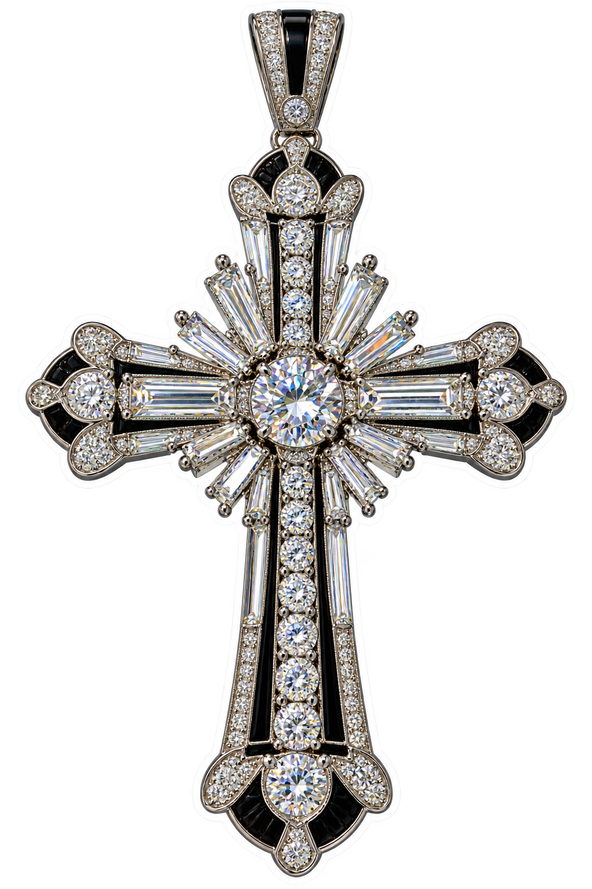
Diamond Platinum Art Deco
Architectural diamond fire held in a cool platinum geometry.
Ruby Gold Byzantine
Deep ruby cabochons and luminous Byzantine goldwork.
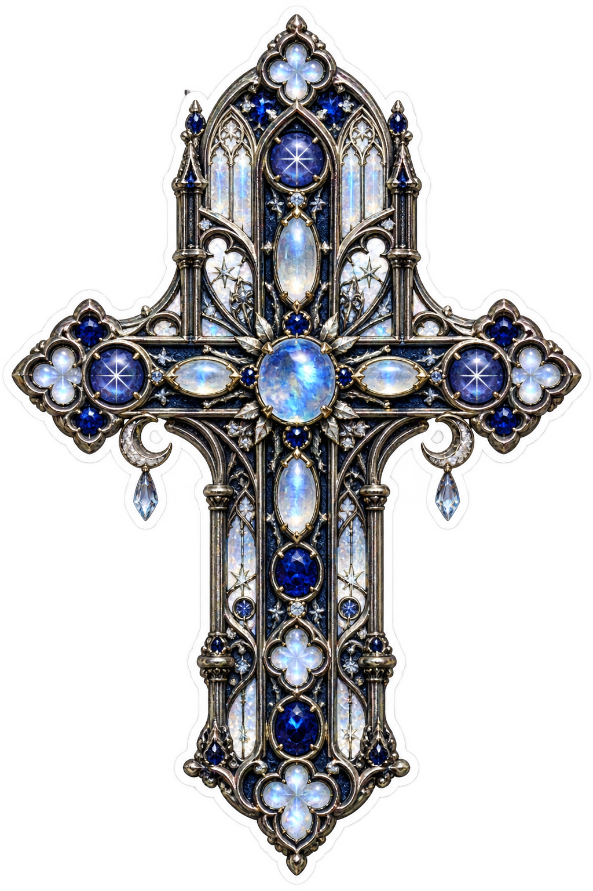
Sapphire Moonstone Gothic
Midnight sapphire, moonstone glow, and cathedral tracery.
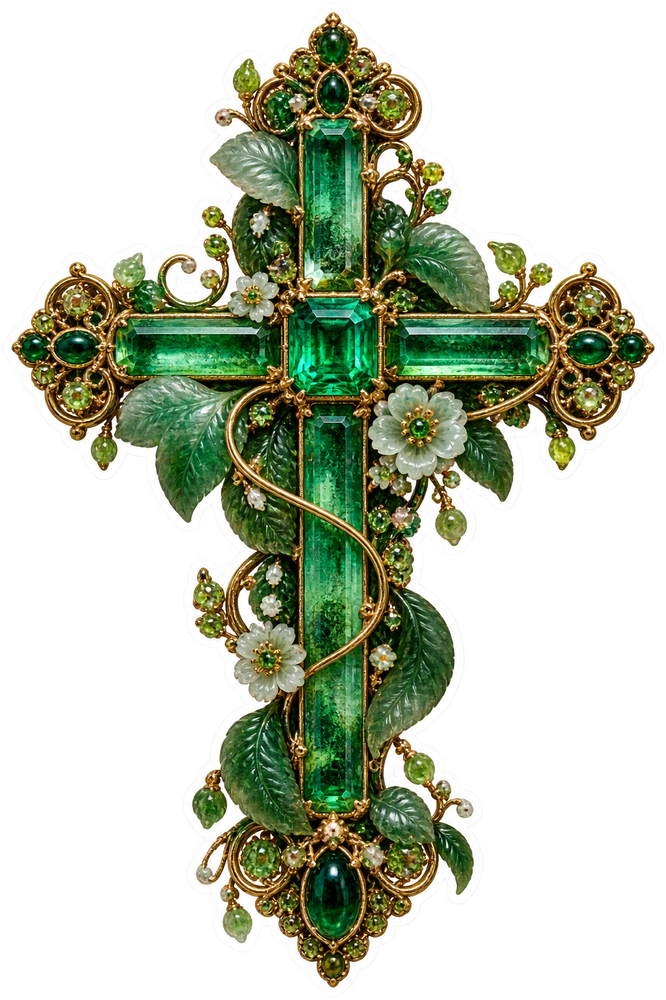
Emerald Jade Botanical
Living green stone wrapped in botanical gold ornament.
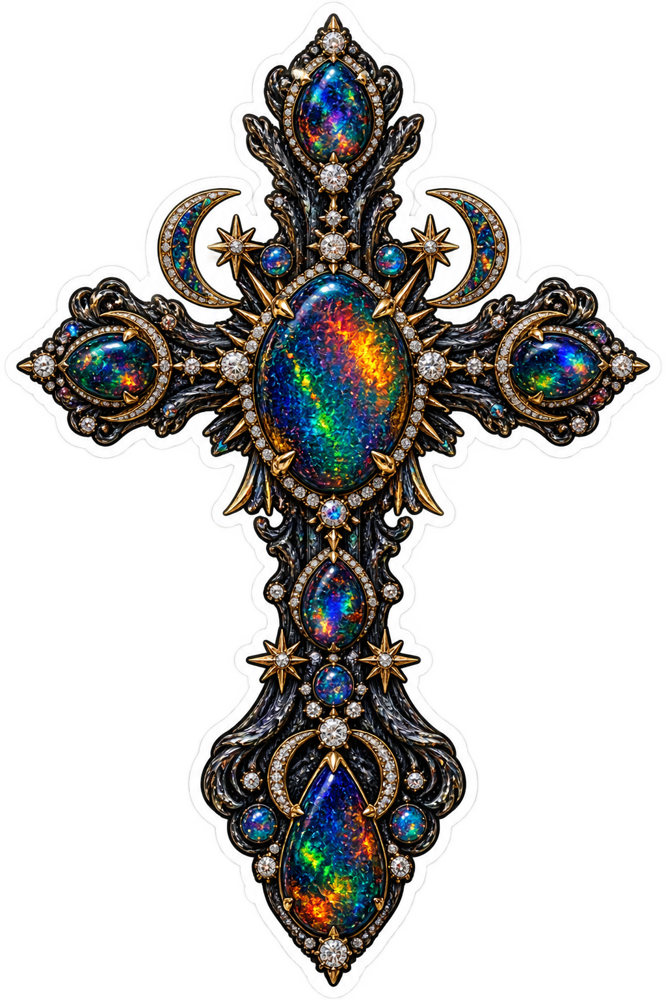
Black Opal Celestial
A dark opal sky flashing with spectral play-of-color.
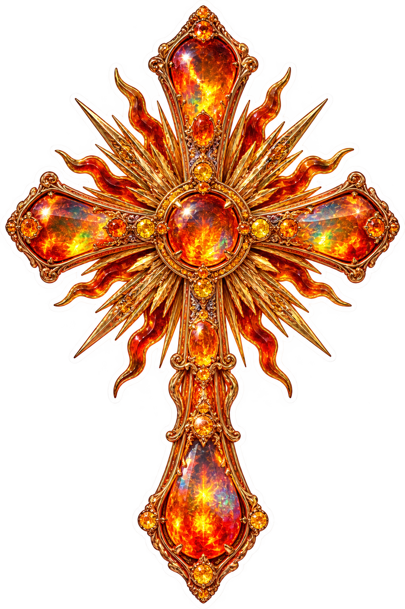
Fire Opal Solar
Translucent flame opal radiating through a solar setting.
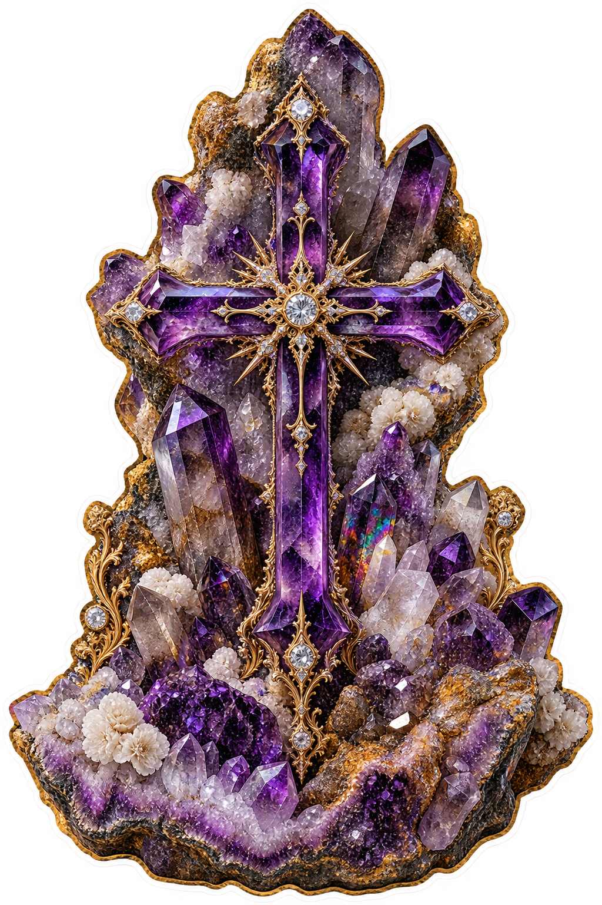
Amethyst Cathedral Cluster
Natural violet crystal points rising like a mineral cathedral.
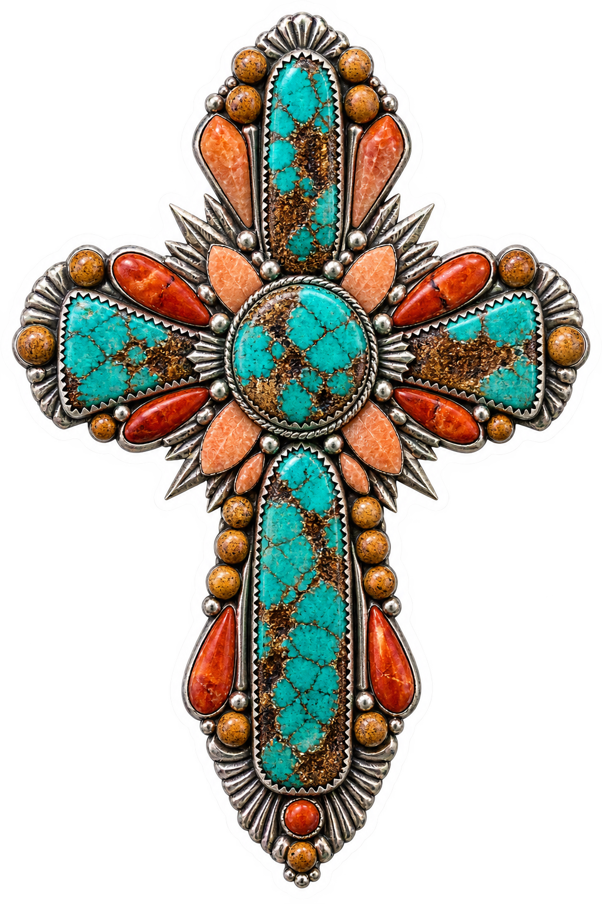
Turquoise Coral Desert
Turquoise matrix and coral-colored mineral in desert mosaic form.
Lapis Malachite Inlay
Ultramarine lapis and banded malachite in ancient inlay.
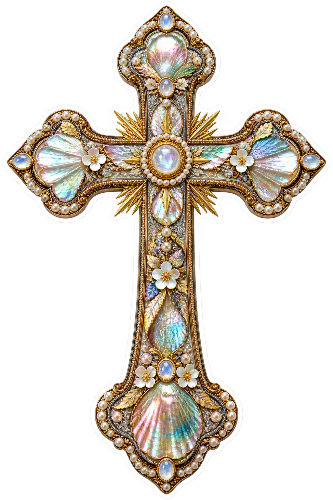
Mother-of-Pearl Reliquary
Luminous nacre veneer inside a jewel-like reliquary frame.
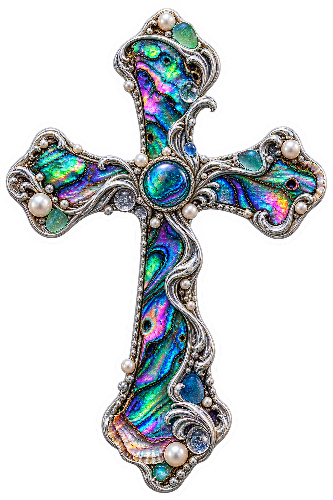
Abalone Oceanic
Oceanic silver and abalone nacre shifting through rainbow color.
Amber Fossil Time Capsule
Ancient inclusions suspended inside honey-gold amber.
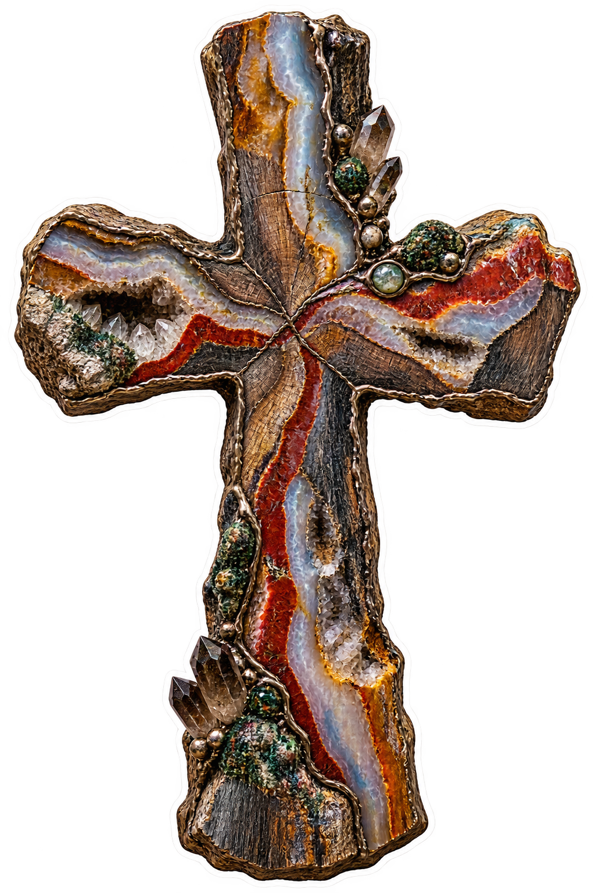
Petrified Wood Geologic
Stone-replaced grain and mineral bands formed across deep time.
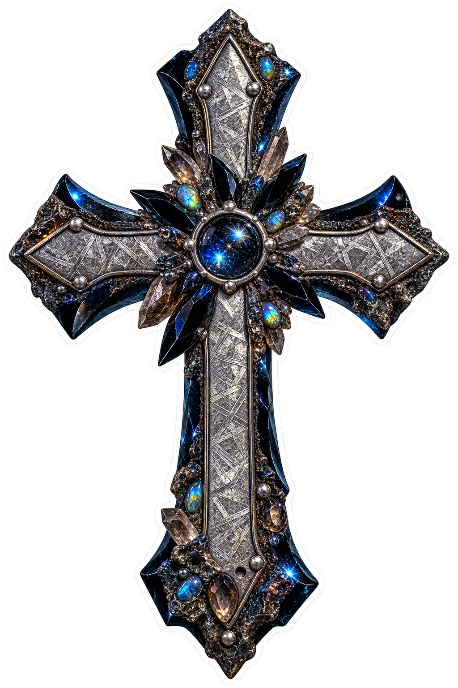
Meteorite Obsidian Cosmic
Meteoric metal pattern and volcanic black glass from two worlds.
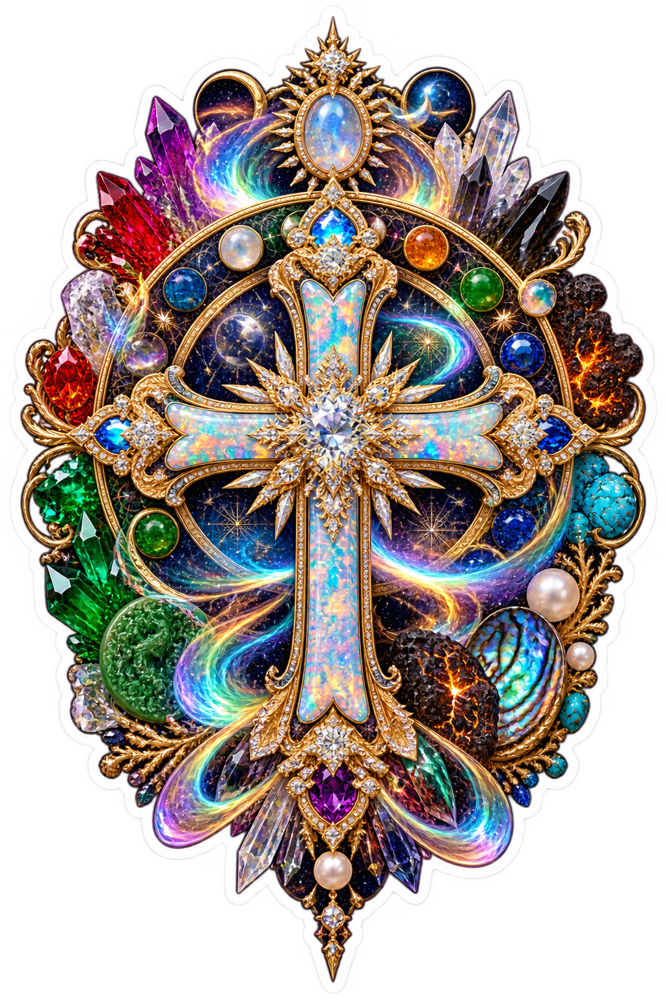
Aurora Mixed-Gem Masterpiece
A master setting of rainbow gems, gold guilloche, and VORATH geometry.